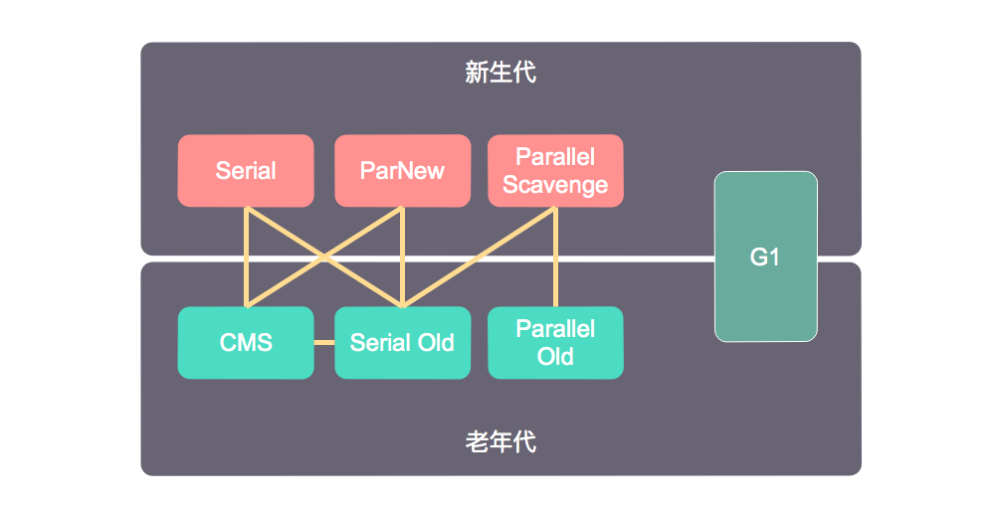

垃圾收集器
Java程序员平时写代码时一般不需要关注内存回收的问题，这是因为JVM的垃圾收集器会自动帮我们回收不再使用的内存。那是不是Java程序员就可以不了解垃圾收集(Garbage Collection, GC)了呢？其实不然，了解GC的原理一方面可以帮助我们写出高效的代码，另一方面当程序出现内存溢出、内存泄露等问题，或者当GC成为系统达到更高并发量的瓶颈时，就需要我们对GC进行监控和调节。
哪些内存需要回收
垃圾收集器想要回收内存的话，首先要做的事情就是确定哪些内存需要回收。如果一个对象已经不被任何其他地方引用的话，那么这个对象就需要被回收。那么怎么判断一个对象是否还被其他地方引用呢？
引用计数法
引用计数法是通过给每个对象添加一个引用计数器来实现的，每当有一个地方引用它时，计数器加1；每当一个地方引用失效时，计数器减1。当计数器为0时，表示已经没有其他地方引用，可以被回收。
引用计数法实现简单，判定效率高，但是这种算法解决不了循环引用的问题，比如对象A引用对象B，对象B又引用对象A，除此之外再没有地方引用对象A和对象B，实际上对象A和对象B需要被回收，但是引用计数法无法回收它们。
虽然有些语言使用引用计数法回收内存，但是主流的Java虚拟机并没有使用这种算法。
可达性分析算法
主流的Java虚拟机使用的是可达性分析算法来判断哪些内存需要回收，这种算法通过一系列被称为“GC Roots”的对象作为起始点，从这些起始点往下搜索，能够被引用到的对象是存活的对象，引用不到的对象就需要被回收。
如果多个对象循环引用，但是它们并不能通过GC Roots引用到的话，也是会被回收，所以可达性分析算法没有循环引用不能回收的问题。
在Java语言中，可作为GC Roots的对象包括如下几种：
- 虚拟机栈(栈帧中的本地变量表)中引用的对象
- 本地方法栈中JNI引用的对象
- 方法区中类静态属性引用的对象
- 方法区中常量引用的对象
怎么回收内存
确定了哪些内存需要回收后，又怎么回收内存呢？不同虚拟机实现的具体细节可能不一样，但是它们的基本思想是一样的，下面将介绍一些常用算法。
标记-清除算法
标记-清除算法如它的名字所说包括“标记”和“清除”两个阶段：首先标记哪些对象需要回收，在标记完成后统一回收所有标记的对象。
标记-清除算法是最基础的算法，之所以说它是最基础的算法是因为其它算法都是基于它并对其不足进行改进得到的。标记-清除算法主要有两点不足：
- 效率问题：标记和清除两个阶段效率都不高。
- 内存碎片问题：回收对象后并没有整理内存，所以会产生大量不连续的内存碎片，碎片太多可能会导致分配大对象时无法找到足够的连续内存而不得不提前触发另一次垃圾收集动作。
复制算法
为了解决效率问题，提出了复制算法。复制算法是把内存分为大小相等的两块，每次只使用其中一块，当使用的一块内存用完的时候，就将存活的对象复制到另外一块去，把已经使用的这块内存一次性释放掉。
复制算法回收时是对整个半区回收，在分配内存时也不用考虑碎片问题，实现简单、运行高效，但是这种算法是以牺牲一半可用内存为代价的。
现在的商业虚拟机都使用复制算法回收新生代，但是因为新生代的对象大部分(IBM研究表明98%)都是朝生夕死，所以并不会使用1:1来分配内存，而是将内存分为一块较大的Eden空间和两块较小的Survivor空间，每次使用Eden和一块Survivor，回收时将存活的对象复制到另一块未使用的Survivor上，然后一次性释放Eden和使用的那块Survivor。
HotSpot虚拟机默认Eden和Survivor的比例是8:1，这个比例可以通过参数-XX:SurvivorRatio来设置，比如默认设置为-XX:SurvivorRatio=8。
标记-整理算法
复制算法在对象存活率较高时需要进行较多的复制操作，更关键的是如果不想浪费50%的空间，就需要额外的空间进行担保，所以老年代不适合使用复制算法。
根据老年代的特点，提出了标记-整理算法，它的整个过程是先标记哪些内存需要回收，然后让存活的对象都向一端移动，最后清理掉边界外的内存，这样就不会出现内存碎片的问题。
分代收集算法
当前商业虚拟机的垃圾收集机器都采用分代收集算法，这种算法根据对象存活周期的不同将内存划分为几块，一般是把堆内存分为新生代和老年代。大多数情况下，对象在新生代的Eden区中分配，大对象则会直接进入老年代，另外在新生代中的对象如果经历多次GC依旧存活的话，也会被晋升到老年代中。
分代收集算法并不是什么具体的算法，而是根据新生代和老年代不同的特点采用不同的算法而已。在新生代中，大部分的对象都逃不过一次GC，只有少量存活，因此使用复制算法。而老年代中，对象存活率高，没有额外的空间对其进行担保，因此使用标记-清除算法或者标记-整理算法。
新生代GC(Minor GC)：是指发生在新生代的GC，因为新生代的对象大多数都是朝生夕死，所以Minor GC非常频繁，一般回收速度也比较快。
老年代GC(Major GC/Full GC)：是指发生在老年代的GC，出现Full GC，经常会伴随至少一次的Minor GC，Full GC的速度一般会比Minor GC慢10倍以上。
何时回收内存
当需要GC时，是否程序就可以随时GC呢？其实不然，JVM在实现GC算法时，必须对算法的执行效率有严格的考量，才能使得JVM能够高效运行。为了实现效率，JVM做了很多具体的实现和优化，这使得并不是任何时候都可以执行GC。
枚举根节点
从前面的部分我们知道JVM通过可达性分析算法来确定哪些对象需要回收，这就需要在枚举根节点时，要求对象的引用关系不能改变，这是因为一旦枚举过的对象的引用关系改变，就会使得枚举的结果不准确，所以这是GC时必须停顿所有Java执行线程(Stop The World, STW)的其中一个重要原因。
考虑到效率的原因，JVM会想方设法减少STW的时间，在HotSpot的实现中使用了一组称之为OopMap的数据结构来保存着对象的引用关系，使得JVM可以快速枚举根节点。
安全点
程序在运行时对象的引用关系在不停地改变，如果为每一条指令都生成对应的OopMap，那将会需要大量的额外空间，所以JVM只会在特定的位置记录引用关系的变化，这些位置称之为安全点(Safepoint)，也就是说程序执行时并非在所有地方都可以停下来GC，而是只有到达安全点才能暂停。
一个很现实的问题是如何在GC时让所有的线程都跑到安全点暂停下来，JVM是使用主动式中断来实现的，也就是需要GC时，JVM会设置一个标志，当线程执行到安全点时会去查询这个标志，如果发现需要GC，就会把自己暂定在安全点。
安全区域
安全点似乎完美地解决了如何进入GC的问题，但是实际情况复杂的多。比如，如果一些线程处于Sleep状态或者Blocked状态，一直走不到安全点怎么办？这就需要安全区域(Safe Region)来解决，安全区域是指在一段代码片段中，引用关系不会发生改变，那么在这个区域任何地方开始GC都是安全的。线程在进入Sleep状态或者Blocked状态时，首先标识自己进入了Safe Region，在离开Safe Region时会检查JVM是否完成了根节点枚举(或者整个GC过程)，如果完成了，线程就可以继续执行，否则就必须等待收到可以安全离开Safe Region的信号为止。
垃圾收集器
上面我们主要介绍的是内存回收的方法论，那么下面会介绍一些垃圾收集器的具体实现。

图中展示了7种不同的收集器，如果两个收集器之间存在连线，就说明它们能够配合使用。收集器所在的区域表示它们是新生代收集器还是老年代收集器。
Serial 收集器
- Serial收集器是一个单线程的收集器，也是最基本、发展历史最悠久的收集器
- 采用复制算法实现
- 在GC时必须STW，直到GC完成
- 是JDK 1.3.1之前新生代唯一的收集器，直到现在也是JVM运行在Client模式下的默认新生代收集器
ParNew 收集器
- ParNew收集器是Serial收集器的多线程版本，本质上没有做过多改进
- 采用复制算法实现
- 在GC时必须STW，直到GC完成，但是由于多线程执行，所以在多核处理器下性能比Serial要高
- 如果老年代收集器是CMS收集器的话，那么ParNew收集器通常是Server模式下新生代的首选收集器，因为只有ParNew收集器和Serial收集器能和CMS配合使用
Parallel Scavenge 收集器
- Parallel Scavenge收集器是多线程收集器
- 采用复制算法实现
- 其他收集器的关注点是尽可能地减小用户线程的停顿时间，而Parallel Scavenge收集器更关注CPU的吞吐量，所以它主要适合在后台运算而不需要太多交互的任务
- 是JDK1.7、1.8的默认新生代收集器
Serial Old 收集器
- 是Serial收集器的老年代版本，是一个单线程收集器
- 采用标记-整理算法实现
- 主要在Client模式下使用，在Server模式下，主要是作为CMS收集器的后备方案
Parallel Old 收集器
- Parallel Old收集器是Parallel Scavenge收集器的老年代版本，是一款多线程收集器
- 采用标记-整理算法实现
- 和Parallel Scavenge收集器一样更关注CPU的吞吐量
- 是JDK1.7、1.8的默认老年代收集器
CMS 收集器
- CMS(Concurrent Mark Sweep)收集器是一个多线程的收集器
- 采用标记-清除算法实现
- 更关注获取最短回收停顿时间
- 适合注重服务响应速度的场合，比如互联网站或者B/S系统的服务端
- CMS收集器运行过程相对来说比较复杂，整个过程分为4步：
- 初始标记：需要STW，仅仅只是标记一下GC Roots能直接关联到的对象，速度很快
- 并发标记：用户线程可以和标记线程并发运行，是GC Roots Tracing的过程
- 重新标记：需要STW，多线程修正并发标记期间因用户程序运行而导致标记产生变动的部分
- 并发清除：用户线程可以和清除线程并发运行
- CMS是一款优秀的收集器，但是它还远没有达到完美的程度，它有以下3个明显的缺点：
- 并发标记和并发清除期间会占用CPU资源，影响用户线程执行效率
- 无法清除并发清除期间产生的垃圾
- 采用标记-清除算法实现，会产生大量内存碎片，在执行Full GC时不得不进行内存碎片的合并过程
G1 收集器
- G1收集器是最新的收集器，是一个多线程的收集器
- G1能够同时回收新生代和老年代的内存
- 使用G1收集器时，整个Java堆划分为多个大小相等的独立区域(Region)，虽然还保留了新生代和老年代的概念，但是它们不再是物理隔离的了。在回收内存时，不再是全区域回收，而是优先回收价值更高的Region。
- G1收集器的运行过程大致可分为以下4步：
- 初始标记
- 并发标记
- 最终标记
- 筛选回收
- G1收集器是JDK1.9默认的收集器
本作品采用知识共享署名 4.0 国际许可协议进行许可，转载请注明原文链接
本文链接：https://schhx.github.io/2018/08/20/垃圾收集器/